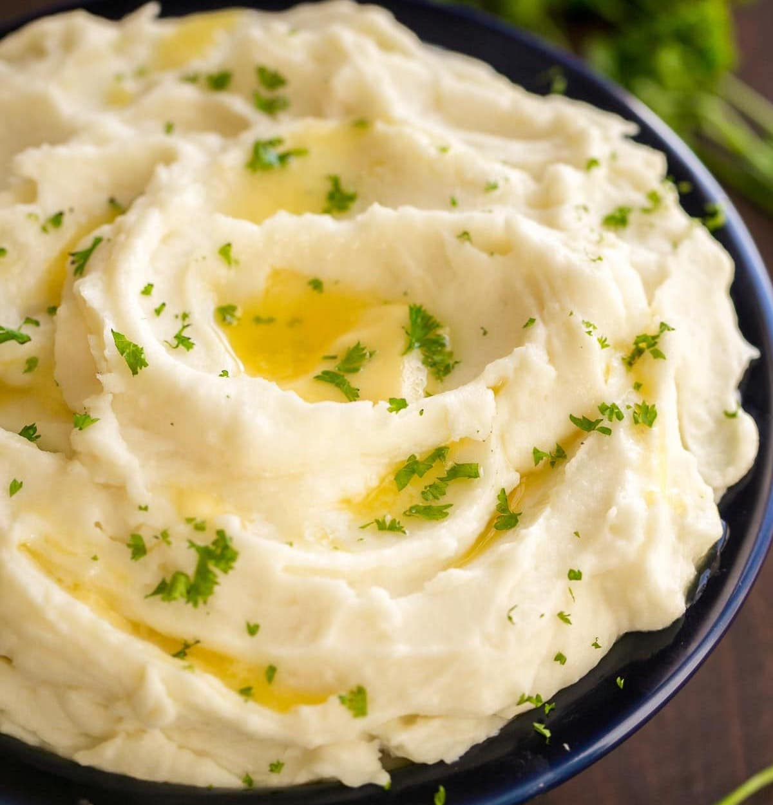

Creamy Mashed Potatoes

Ingredients
- 2 pounds baking potatoes, peeled and quartered.
- 2 tablespoons butter.
- 1 cup milk
- Salt and pepper to taste
Directions
- Bring a pot of salted water to a boil.
- Add potatoes and cook until tender but still firm, drain after about 15 minutes.
- In a small saucepan heat butter and milk over low heat until butter is melted.
- Using a potato masher or electric beater, slowly blend milk mixture into potatoes until smooth and creamy.
- Season with salt and pepper to taste.